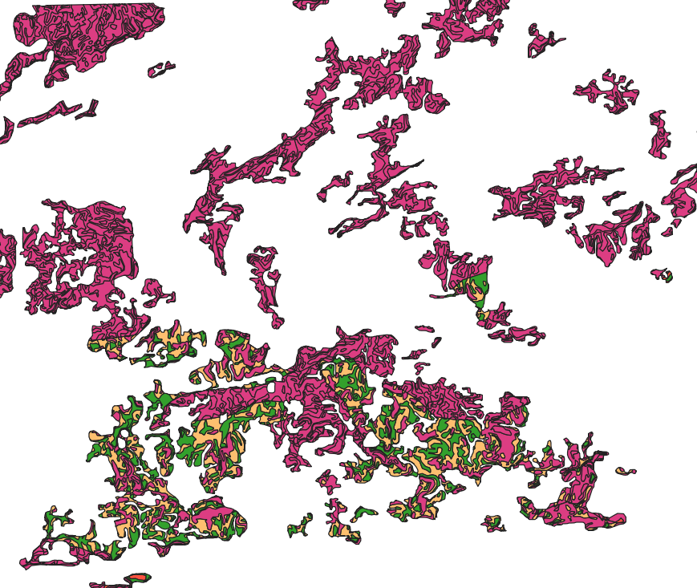
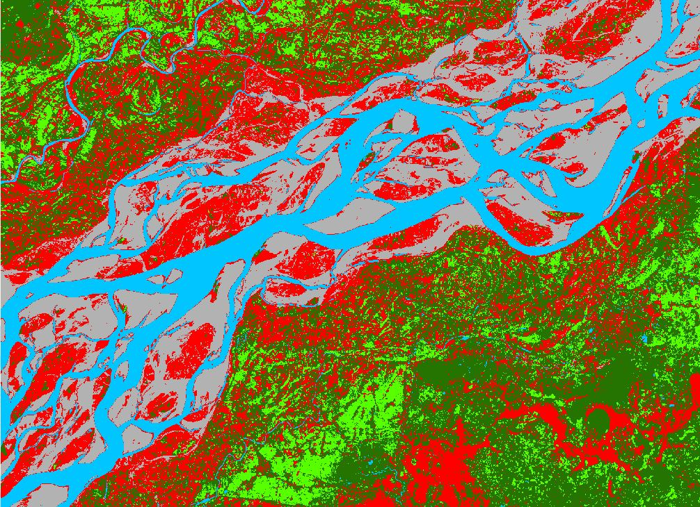
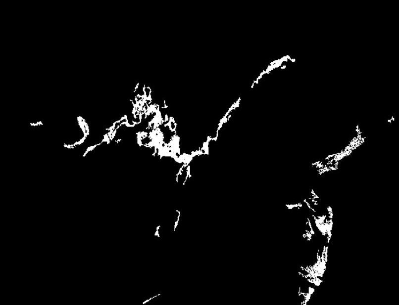
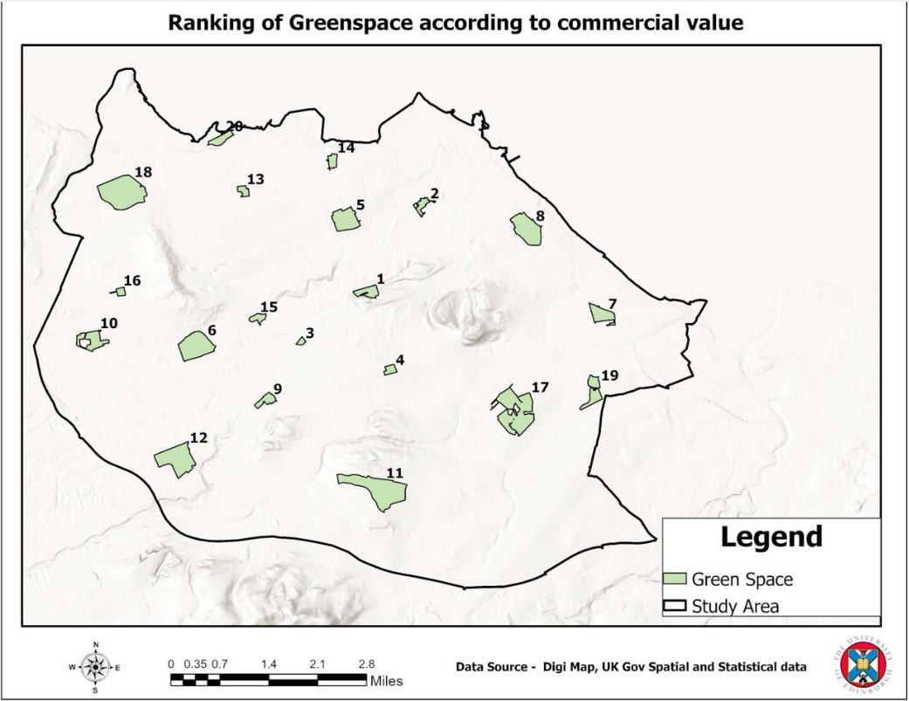
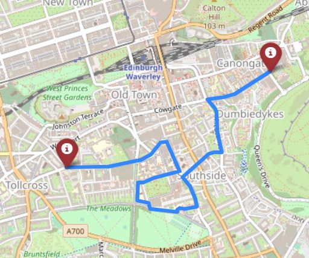
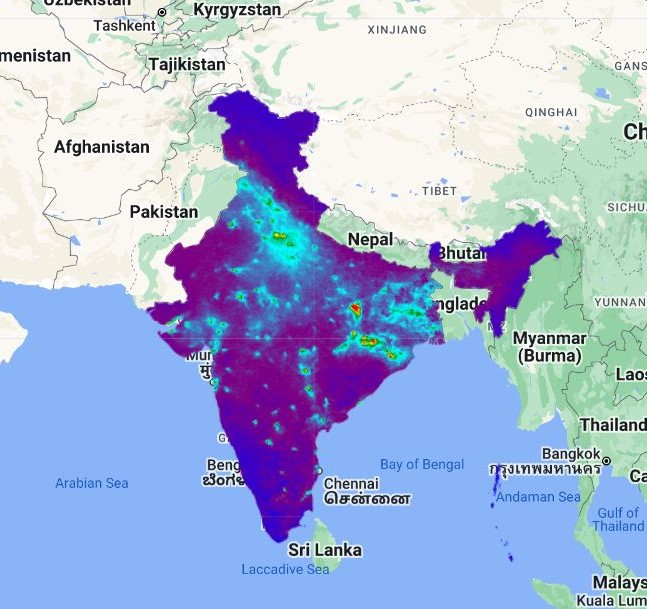
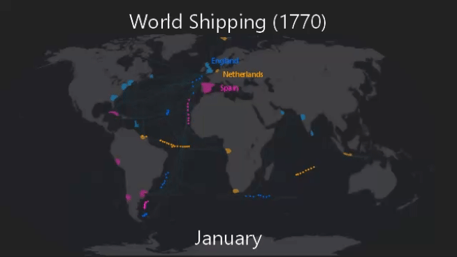
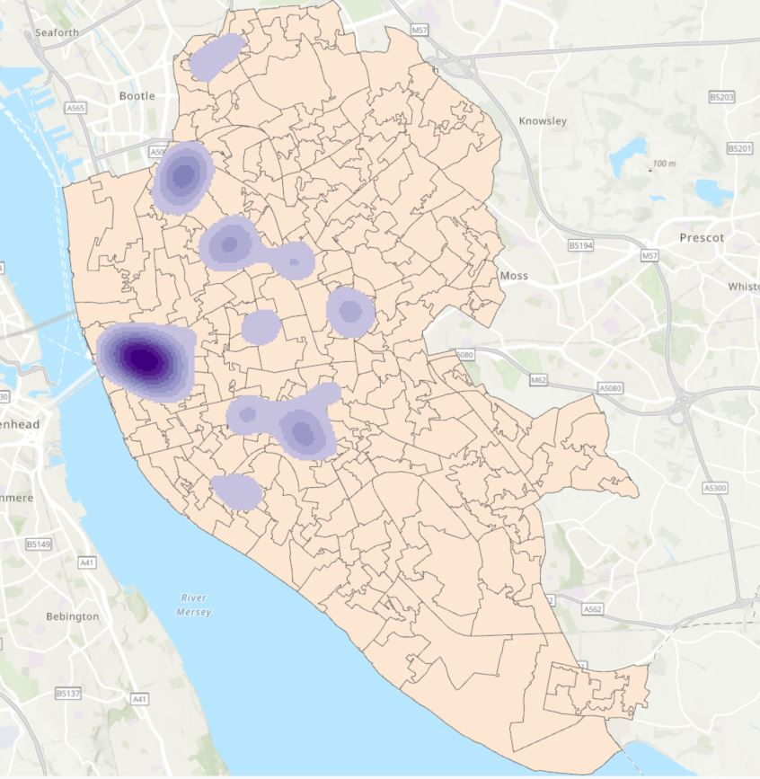
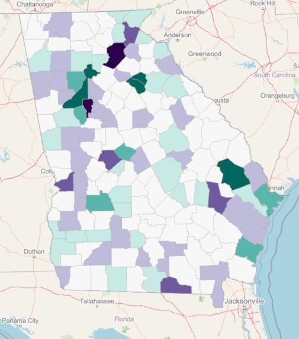

Delineation of Watershed
Watershed delineation is a fundamental process in the field of hydrology and environmental science. It involves the identification of the boundaries of a watershed, which is an area of land where all the surface water drains into a common outlet, such as a river, stream, or lake. In addition to delineating watershed boundaries, hydrologists often classify the streams within a watershed into different orders based on their size and position within the drainage network

Site Suitability for Mulberry Plantation
Site suitability analysis is a crucial step in the successful cultivation of mulberry plants. This analysis integrates key data layers, including soil types, slope characteristics, land use and land cover (LULC) information, and groundwater availability. By combining these datasets in QGIS, we create a comprehensive site suitability map, highlighting the most favorable locations for mulberry cultivation.

Satellite Image Classification - Supervised
Image classification is a fundamental technique in remote sensing. One of the primary applications of image classification is to analyze land cover and land use patterns over large areas. We classified a satellite image into five distinct classes: Agriculture, Water, Sand, Built-Up, and Forest. Image classification is a crucial step in the analysis of remote sensing data, enabling the extraction of meaningful information from satellite images

Oil Spill Detection
Sentinel-1 is equipped with synthetic aperture radar (SAR) sensors. These radar images are exceptionally valuable for oil spill detection as they are unaffected by weather conditions, and they can detect oil even in the absence of visible light. Oil spills on water surfaces often cause changes in radar backscatter values in Sentinel-1 imagery. To extract regions with significant changes, a threshold is applied. Pixels with backscatter values above this threshold are considered potential oil spill.

Capital Green Space - Commercial Value
Urban greenspaces provide multiple important benefits, including influencing surrounding commercial value. This website provides an overview of research undertaken to investigate the commercial value of greenspaces across the city of Edinburgh. The research involved exploring green spaces impact on property values, population, distribution of shops, and transport routes to assess accessibility, particularly focusing on Princes Street Gardens and Craigmillar Castle Park.
Green Space

Interactive Web Map - University of Edinburgh
This project constructs an interactive map of a university campus that includes main buildings, roads, and popular spots. The user interface will allow users to conduct spatial queries, such as finding the nearest places of interest or determining the distance between two points. Not only can this interactive map be used to assist students to familiarize themselves with the university area before attending, but also acts as a guide for the public when visiting the university.
Web Map
Story Map - India Unity in Diversity
India's cultural richness and diversity have been profoundly shaped by numerous empires and dynasties throughout its history. Its vast expanse across the Indian subcontinent leads to diverse customs, traditions, and clothing that vary with the region's climate. This rich culture finds expression in India's art, architecture, literature, music, dance, and cuisine. India's multicultural society comprises people of different religions, languages, and backgrounds, making it one of the world's most diverse nations.
Story Map

Flood Mapping - Myanmar
The radar data from Sentinel-1 enables the detection and delineation of flood extents by highlighting changes in surface water. By comparing images acquired before and after a flood event, We can identify areas that have been inundated, assisting in the rapid assessment of affected regions. Additionally, the high spatial resolution of Sentinel-1 data allows for the detailed mapping of flood boundaries, aiding in the precision of disaster management and response efforts.

Air Quality Mapping - No2 Concentration
This project leverages Google Earth Engine to access Sentinel-5P satellite imagery, focusing on India, and isolates the concentration of nitrogen dioxide (NO2) over a specific time frame. By calculating the mean NO2 column density within a defined area, it effectively demonstrates how environmental monitoring tools can be harnessed for assessing air quality. With a visually compelling map that employs a color palette to represent NO2 concentration levels, this exemplifies a valuable application in tracking and addressing air quality concerns.
GEE code

Closest Facility

Closest Facility with Barrier

Service Area

Service Area with Barrier
Network Analysis
Network analysis is a tool for optimizing facility location and resource allocation. Whether with or without barriers, they help streamline decision-making processes, and plan for emergencies, while accounting for the complexities of real-world geography.
Closest Facility: Identifying the nearest facility based on factors like distance or travel time. Commonly used in logistics, emergency response, and location-based services.
Service Area: Service area analysis, helps identify the geographic extent that a service can efficiently cover.

Hotspot Analysis
To address socio-economic disparities in Edinburgh, By focusing on the unemployment factor, we can identify geographic areas where joblessness is particularly concentrated, providing essential insights for policymakers and community organizations. Through rigorous spatial analysis, we pinpoint hotspots of unemployment, enabling targeted interventions, workforce development initiatives, and resources to uplift these communities. Features within the hottest spots have the highest positive Z-scores, and within cool spots, the most negative.

3D - DEM and Contours
Creating a 3D model using a Digital Elevation Model (DEM) and adding contours to it is a powerful technique in geospatial analysis and visualization. This process allows for a detailed representation of terrain and elevation, making it easier to understand and communicate geographical features. You can use this 3D model and the contours for various applications, such as landscape visualization, flood modeling, or urban planning.

Animation Map
A 2-D animation map of world shipping routes in 1770 is a remarkable way to visualize historical maritime trade and exploration. This type of project can be valuable for educational, historical, or research purposes. The animated map can help viewers understand the dynamics of global shipping routes during that period, the connections between different regions, and how these routes evolved over time. It's an engaging and informative way to explore the history of global trade and the impact it had on the world.

Kernel Density Estimation - Fast Food Outlets
Kernel Density: KDE calculates the density of features in a neighborhood around those features but intelligently analyses the nature of the features included to exclude effects due to outliers and to define a suitable search radius to determine the size of neighborhood used during the process.
Zonal Statistics: Zonal Statistics involves aggregating information from raster datasets within predefined zones, often represented by polygons. Zonal statistics based on the average density of fast food outlets within that zone

Geographically Weighted Regression
Modeling the educational attainment within the US state of Georgia. Geographically Weighted Regression (GWR), a local statistical technique, we delve into the intricate spatial variations of model parameters. Recognizing that datasets and relationships between variables evolve across space, GWR allows us to uncover nuanced shifts in regression parameters. By acknowledging the dynamic nature of these processes, we gain a more accurate understanding of the spatial intricacies shaping educational outcomes. This method gives localized insights, into a comprehensive analysis of the determinants of educational attainment in Georgi.

Spatial Accessibility to GP
Utilizing the Two-Step Floating Catchment Analysis (2SFCA) for GP services in Glasgow City, this approach seamlessly integrates two catchments, each outlining the accessible healthcare area around individual General Practitioner locations. By overlaying these catchments, the 2SFCA produces a holistic spatial accessibility measure. The 2SFCA provides a nuanced understanding of how residents can access services beyond their immediate neighborhoods, offering insights crucial for healthcare planning and resource allocation.